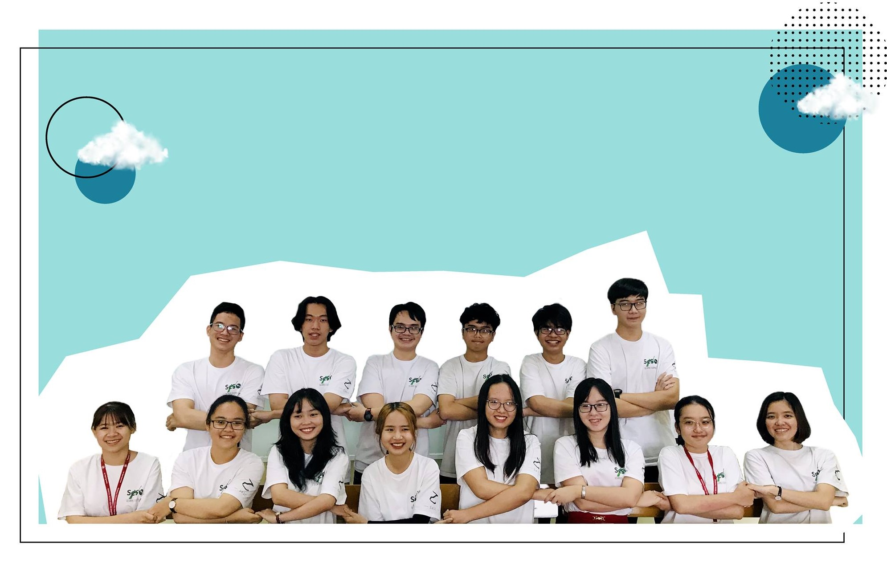
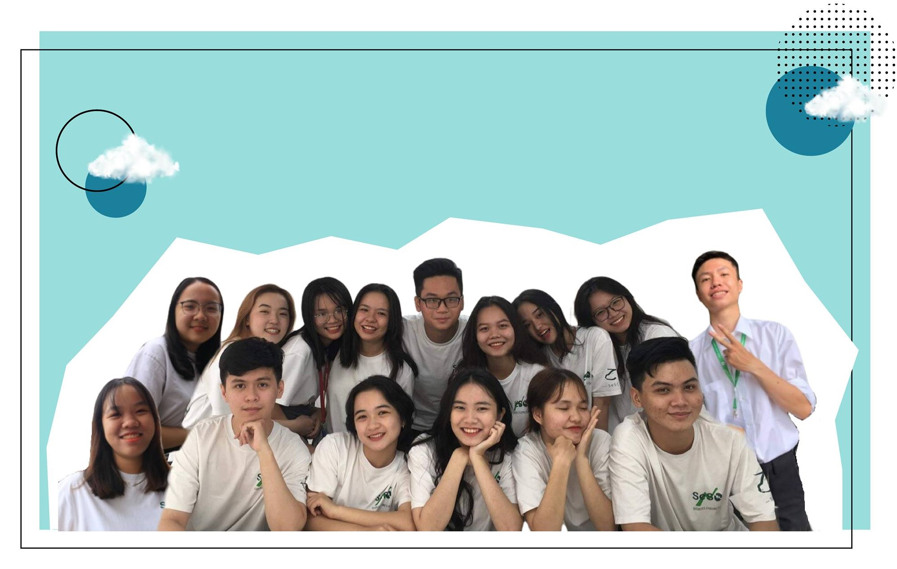
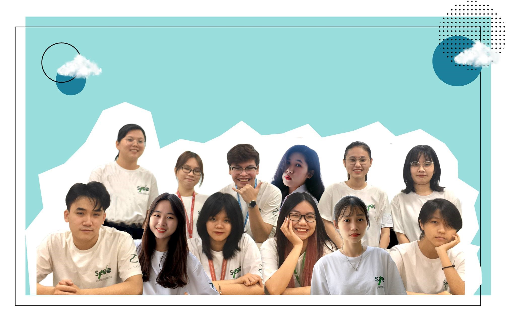
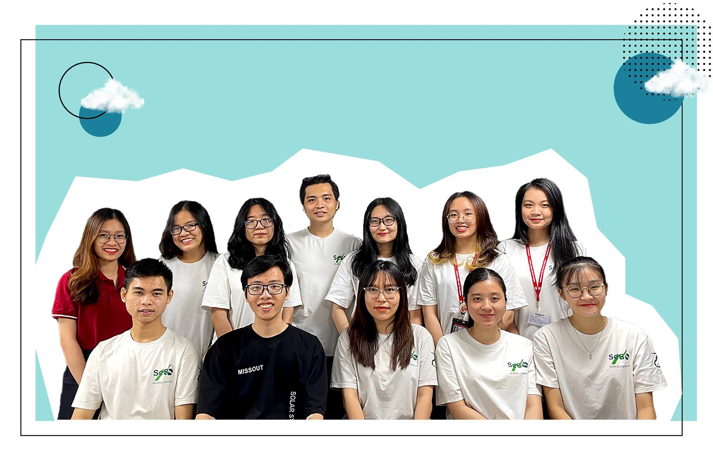

Our departments
Working in perfect sync with each other

Research and Development

Event

Media

External Relation

Knowing how to invest has become so important now than ever before to reach financial independence and more importantly,
to be able to not lose what you have worked so hard for.
Internal training
Provide knowledge about the Financial industry, focusing on building a critical and open mindset for trainees.
Basic view over the stock market, how to read and interpret charts and various indicators. These training sessions also ensures the understanding of various types of assets.
Sharing about different fields in the financial industry including securities analyst, financial consultant, audit, etc. from former club memebers.
Financial Student Contest is organized annually by SeSC Finance - Securities Club with the goal of bringing together students with igniting passion for Finance
from all over the country to compete with each other to find the ultimate champions
Working in perfect sync with each other